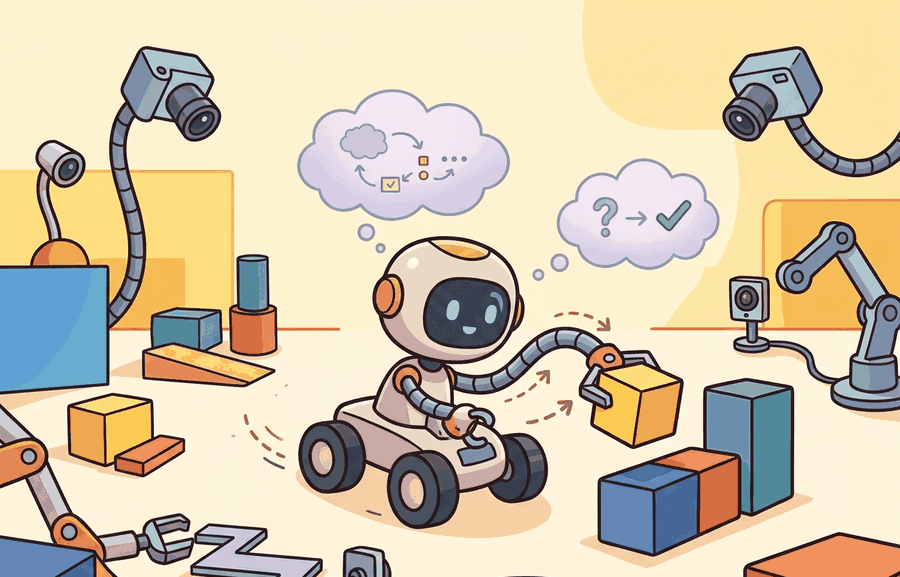

"I replaced one derivation with three plots and the concept finally stopped hiding."
An Undergraduate Lab Sequence

This section adapts the graduate curriculum described in section 60.1 for students who have completed introductory programming and linear algebra but have not yet taken a formal control theory course. Instructors who want to restore the full derivation track can follow the optional readings flagged throughout, particularly around section 7.3 (proportional and PID control) and section 8.6 (Kalman filtering). The lab-first approach introduced here scales into the two-semester sequence in section 60.3, where the same simulation environment is reused for more advanced projects.
A student adjusts a single gain, watches a simulated robot stop oscillating, and suddenly understands stability more deeply than three lectures of Riccati equations ever managed. That moment is possible right now because high-fidelity simulators run in a browser, and embodied AI has reached the point where undergraduates can close the perception-action loop themselves in an afternoon. This section shows how to cut the formal theory load without cutting the insight: which derivations to defer, which labs replace them, and how to build a 14-week arc that leaves students able to ship a working agent, read a real paper, and explain exactly where their system will fail.
This section develops the technical contract for one-semester advanced undergraduate course (lighter theory, more labs) into a usable mental model. First we define the object of study, then we connect it to the agent loop, then we test it with a compact implementation.
The key question in One-semester advanced undergraduate course (lighter theory, more labs) is practical: what must the agent know, what can it observe, what action is available, and what evidence shows that the action worked under the stated conditions?
Advanced undergraduate course design should be judged by the action it improves. A section claim is strong when it names the decision, the measurement, and the failure mode before a larger model or simulator is introduced.
Theory
For One-semester advanced undergraduate course (lighter theory, more labs), the practical design rule is to make the interface inspectable before optimization begins: inputs, outputs, units, latency, bounds, and failure labels should all be visible in the saved artifact.
The mechanism in One-semester advanced undergraduate course (lighter theory, more labs) is the contract between representation and action. Name what enters the module, what leaves it, which assumptions make that transformation valid, and which log would reveal a bad handoff.
Worked Example
For One-semester advanced undergraduate course (lighter theory, more labs), keep one concrete rollout in view. A sensor reading becomes an estimate, the estimate constrains an action, the action changes the world, and the next observation confirms or contradicts the assumption. The section's idea is useful only if it improves that loop.
Consider a specific case: a 14-week undergraduate robotics course using this book drops the full LQR derivation (normally 3 lectures in the graduate version) and replaces it with a MuJoCo Playground lab where students tune a proportional controller for a CartPole task. Students start with a gain of $k_p = 1.0$, observe oscillation at 2 Hz, increase to $k_p = 5.0$, observe overshoot, then settle on $k_p = 3.2$ by reading the phase margin from a Bode plot generated by their notebook. The formal optimality proof is offered as optional reading; the lab artifact (gain, phase margin, step-response plot) is the graded deliverable. The mechanism of stability is learned through the diagnostic, not through the Riccati equation.
When running the CartPole gain-tuning lab in MuJoCo Playground, set the model timestep (model.opt.timestep) to 0.002 s before sweeping gains: the default 0.01 s timestep causes the integrator to alias fast oscillations, so a gain that looks unstable at the default timestep may actually be stable and vice versa. Students who skip this step routinely report that "the controller never converges," when the real culprit is numerical blow-up rather than a wrong gain. A quick sanity check is to run the same gain with mj_step called twice per control step and confirm that the step-response shape does not change; if it does, the timestep is the problem, not the tuning.
For One-semester advanced undergraduate course (lighter theory, more labs), the small contract exists to expose the teaching artifact before tooling takes over. Use notebooks, simulators, shared logs, rubrics, and capstone studios only when they preserve the same observation, action, metric, and failure fields.
Practical Recipe
- Write the observation, action, and success metric before choosing a model.
- Build a baseline that is simple enough to debug by inspection.
- Add the library implementation only after the baseline behavior is understood.
- Record failures as structured cases: perception error, state error, planning error, control error, or evaluation error.
- Run at least one perturbation test before trusting the result.
The most frequent failure in the lighter-theory format is removing derivations without adding a replacement diagnostic. Instructors cut the Kalman filter derivation to save two lectures, but provide no lab where students observe filter divergence when process noise is misspecified. Students then know the filter exists but cannot diagnose or tune it. Every reduced derivation needs a corresponding experiment where the mechanism being skipped becomes visible through numbers, plots, or a structured failure case.
A team using One-semester advanced undergraduate course (lighter theory, more labs) starts by writing the task panel, not by picking the largest model. They keep a baseline run, a maintained-tool run, and a perturbation run in the same result folder. The comparison is accepted only when the action trace, metric, and failure labels come from one script.
A good embodied system makes one-semester advanced undergraduate course (lighter theory, more labs) visible twice: once in the design sketch and once in the replay artifact. The second view keeps the first one honest.
For One-semester advanced undergraduate course (lighter theory, more labs), the open research question is not whether a larger policy can produce a better demo. The sharper question is whether the method improves reliability across new scenes, new embodiments, delayed feedback, and rare failures under an evaluation protocol that another lab can reproduce.
For One-semester advanced undergraduate course (lighter theory, more labs), can you name the observation, action, protected assumption, success metric, and one likely failure case? If any field is vague, rewrite the contract before adding model complexity.
Topic-Native Deepening
An advanced undergraduate version should preserve the honesty of embodied AI without assuming mature mathematical fluency from day one. The design goal is to keep the system loop visible while shifting some formal depth into guided experiments, diagrams, and reflection.
The challenge is not simplification for its own sake. It is choosing which abstractions students must derive themselves and which ones they should experience empirically through well-designed labs.
One-semester advanced undergraduate course (lighter theory, more labs) becomes teachable once the student can state the operative variables, the decision boundary, and the evidence artifact. The section should therefore be read together with Part III on control and estimation and Part IV on simulation, where the same loop is developed from adjacent angles.
Let mastery be approximated by $M_k = w_c C_k + w_l L_k + w_r R_k$, where $C_k$ is conceptual understanding, $L_k$ is lab completion quality, and $R_k$ is reflective explanation. Undergraduate adaptation should raise $L_k$ and $R_k$ when formal derivation time is reduced.
If you lighten theory without increasing experiments and reflection, students only lose depth. The substitution works only when each removed derivation is replaced by a concrete artifact or visual diagnosis that teaches the same mechanism from another angle.
The lighter-theory approach breaks down in three identifiable situations: when subsequent topics depend on a skipped derivation (removing the Lyapunov stability proof becomes a problem once students hit nonlinear control in week 10 and cannot read stability arguments), when labs are under-specified and students complete them without understanding what they measured, and when reflection exercises are graded on completion rather than quality of reasoning. In each case the symptom is the same: students can run the code and report a number, but cannot explain what changes when the environment shifts slightly. This is called the explain-the-shift test, and it is the diagnostic that distinguishes successful theory-reduction from superficial coverage.
- Keep the full loop structure but reduce theorem density in the first half of the term.
- Replace some derivations with numeric traces, visual diagnostics, and guided notebooks.
- Use smaller project scopes with tightly specified deliverables and shorter feedback cycles.
- Require students to explain failure cases in prose, not just submit working code.
- Offer optional deeper readings for students who want the graduate-level derivations.
| Dimension | What To Specify | Why It Matters |
|---|---|---|
| Math load | Shorter derivations, more intuition boxes and diagrams | Maintains momentum without hiding mechanisms. |
| Lab structure | Guided checkpoints, smaller validated exercises, faster feedback loops | Supports students who are still learning the tooling stack. |
| Assessment | Frequent low-stakes artifacts plus one smaller capstone | Reduces last-minute project collapse. |
| Discussion | Reflection on debugging and system behavior | Builds engineering judgment early. |
def validate_plan(payload: dict[str, object]) -> dict[str, object]:
assert payload, "payload must not be empty"
return payload
# Undergraduate-course adaptation card.
plan = {
"formal_derivation_weeks": 4,
"guided_lab_weeks": 10,
"weekly_reflection": True,
"capstone_scope": "narrow simulator-first project",
}
print(validate_plan(plan)){'formal_derivation_weeks': 4, 'guided_lab_weeks': 10, 'weekly_reflection': True, 'capstone_scope': 'narrow simulator-first project'}The expected output should show what replaced theory load, not just that theory was reduced. Guided labs and reflection are the replacement mechanism.
After the from-scratch contract is clear, the practical route uses Jupyter, Colab, MuJoCo Playground, Gymnasium, LeRobot notebooks, GitHub Classroom. The payoff is that standard interfaces, logging, batching, and replay support move from ad hoc glue code into maintained infrastructure, while the evidence schema stays the same.
This version of the course works best when every lab ends with a short explanation of what failed and what changed after debugging. That habit is more valuable than squeezing in one extra advanced topic superficially.
A live teaching question is how to introduce visuomotor foundation models such as RT-2 or OpenVLA without letting inference latency hide the embodied fundamentals. A Franka Panda arm executing a diffusion policy over a 7-DoF action space at 10 Hz will miss a grasp not because the policy is wrong but because a 150 ms network round-trip consumes 1.5 control cycles; undergraduates who skip the timing analysis never learn to diagnose this failure. Undergraduate courses therefore need explicit latency-budget exercises before any foundation model is introduced: students should measure the wall-clock cost of a single forward pass (typically 40-80 ms for a ResNet-50 backbone on a laptop GPU), compare it against the Nyquist rate implied by their simulator timestep, and label the resulting constraint in their architecture diagram before writing a single line of policy code.
For One-semester advanced undergraduate course (lighter theory, more labs), the artifact should show the course-design decision, the evidence students must produce, and the failure mode that would trigger a revised assignment or rubric.
- One-semester advanced undergraduate course (lighter theory, more labs) matters when it changes an embodied agent's action under a stated observation and metric.
- Lower the formal load while preserving the build, evaluate, and explain cycle.
- Strong evidence is saved as one artifact containing the baseline, the maintained-tool path, the metric panel, and labeled failures.
Design a method-matched experiment for One-semester advanced undergraduate course (lighter theory, more labs). Specify the environment, observation schema, action interface, metric, and one perturbation that targets the section's core assumption.
Section References
Biggs, J. Teaching for Quality Learning at University. Open University Press, 1999.
Use for constructive alignment between learning outcomes, activities, and assessment.
Anderson, L. W. and Krathwohl, D. R. A Taxonomy for Learning, Teaching, and Assessing. Longman, 2001.
Use for designing assessments that move from recall to analysis, creation, and evaluation.
What's Next?
Next, continue with the following teaching section, where the One-semester advanced undergraduate course (lighter theory, more labs) contract becomes a concrete course-design decision.